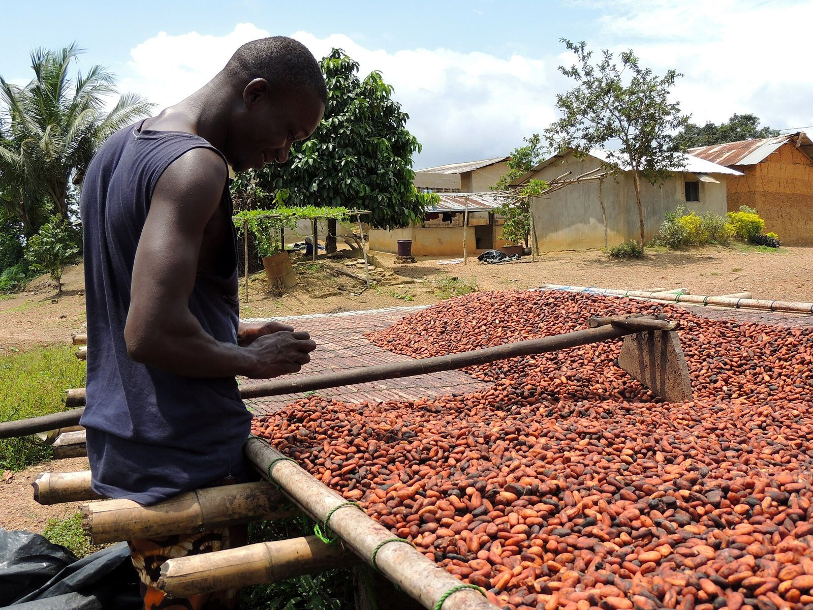

Promotionnelle · 3 min 29 · voix masculine
Fairtrade 2026-2027 : l’argent des membres
Prix Minimum, Prime, différentiel de 349,39 €/t, répartition de la Prime et ce que nous ne promettons jamais.
GEC-CI prépare les sociétés coopératives de cacao aux standards Fairtrade : Assemblée générale, comité de surveillance, Plan de Développement Fairtrade, comptabilité de la Prime et du différentiel, reçus membre par membre. FLOCERT certifie ; nous préparons.
L'argent Fairtrade appartient aux membres : le système de preuves doit le montrer, membre par membre.

Voix off française, musique, texte affiché à l'écran : à partager avec votre conseil d'administration et vos équipes. Toutes les vidéos GEC-CI PRO
Prix Minimum, Prime, différentiel de 349,39 €/t, répartition de la Prime et ce que nous ne promettons jamais.
Conditions d’entrée, parcours FLOCERT, dates limites de déforestation et exigences cacao en Côte d’Ivoire.

Sans acheteur engagé par écrit sur deux ans, FLOCERT refuse la candidature : le travail en amont est perdu.
Au-delà de 30 jours, c'est un critère majeur : risque de suspension. Les reçus séparés du différentiel et de la Prime sont aussi exigés (critère central 4.1.0.31).
Chaque dépense doit avoir sa ligne au Plan de Développement Fairtrade, voté en Assemblée générale.
Le standard cacao exige un contrat écrit avec chaque métayer ou gardien, dont il garde une copie.
La même méthode pour les trois filières ; seul le référentiel change.
Sélection GEC-CI des critères de conformité applicables, avec la preuve documentaire conseillée. Le texte officiel FLOCERT en anglais fait foi.
Majeur : non-respect = risque de suspension · Central : obligatoire · Développement : progrès attendu dans le temps. 140 critères sont exigés dès l'audit initial (année 0).
Répondez honnêtement : rien n'est enregistré ni envoyé. Le résultat donne vos priorités ; il ne remplace pas le diagnostic sur place.

Registres incomplets, pas de responsable du système interne.

Organisation correcte, l'acheteur attend un premier audit.

Rainforest Alliance v1.4 ou RSPO 2024 : les écarts à combler.

Non-conformités majeures, certificat suspendu, conflit interne.

Cohérence des données entre sections, magasins et ponts-bascules.

Traçabilité, bilan massique, dossiers d'origine pour le règlement européen.
Personnages : illustrations créées pour GEC-CI, ils ne représentent pas des personnes réelles.
Personnages : illustrations créées pour GEC-CI, ils ne représentent pas des personnes réelles.
Facture normalisée électronique pour chaque étape. Le prix se calcule après le diagnostic, lot par lot, jamais sur la part de la Prime due en espèces aux membres. Les frais FLOCERT (inscription 612 €, redevance annuelle, jours d'audit) sont payés par la coopérative à FLOCERT : nous les chiffrons avec vous avant la candidature.
Vos données restent à vous : elles sont hébergées dans votre espace et vous sont restituées en fin de contrat.
279 critères, preuves, ventes Fairtrade, calcul du différentiel et de la Prime, Plan de Développement, AG, exploitants ; manuel intégré.
Ouvrir la plateformeManuel de 70 pages : conditions d'entrée, critères, argent Fairtrade, gouvernance, audit FLOCERT. Lisible dans la plateforme.
Lire dans la plateformeClasseur Excel de 24 registres et outils, présentation de 13 diapositives pour le conseil d'administration : remis à chaque client.
Les demanderLe système de gestion du cabinet : clients, contrats, missions, preuves, validations humaines, incidents, facturation et journal d'audit. Un seul compte pour toutes les plateformes GEC-CI ; droits vérifiés par le serveur.
Ouvrir IA GECI
GEC-CI est dirigé par Mr SIDIBE ABDOULAYE, Président-Directeur Général, ATN RA et formateur-auditeur ISO 9001, 14001 et 45001. La direction suit chaque mission jusqu'à la décision écrite.


Portraits de bureau : décors mis en scène numériquement.
| Premier contact | Réponse le jour même, rendez-vous sous 7 jours |
| Diagnostic | Rapport sous 10 jours ouvrés après la visite |
| Vos questions | Réponse sous 48 heures ouvrées |
| Comité de pilotage | Chaque mois, compte rendu sous 5 jours ouvrés |
| Données transmises | Retour écrit sous 5 jours ouvrés |
| Audit blanc | Rapport sous 7 jours ouvrés |
Avec les 279 critères FLOCERT et le calcul de votre différentiel. Vous repartez avec vos trois priorités.
+225 05 55 49 45 94WhatsApp+225 07 57 88 13 49